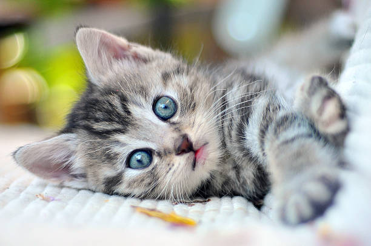
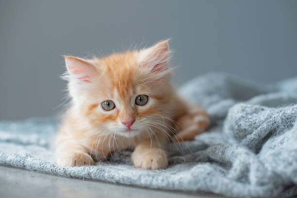
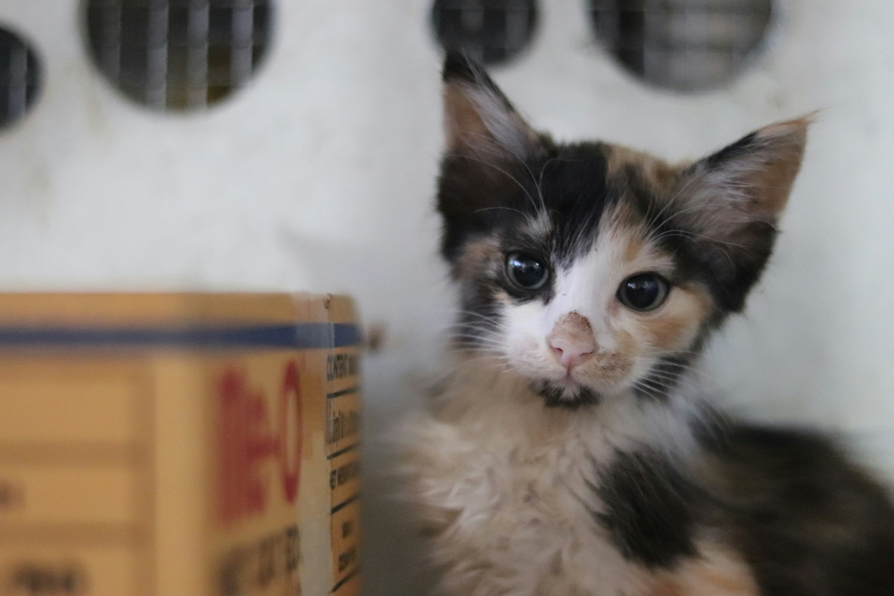
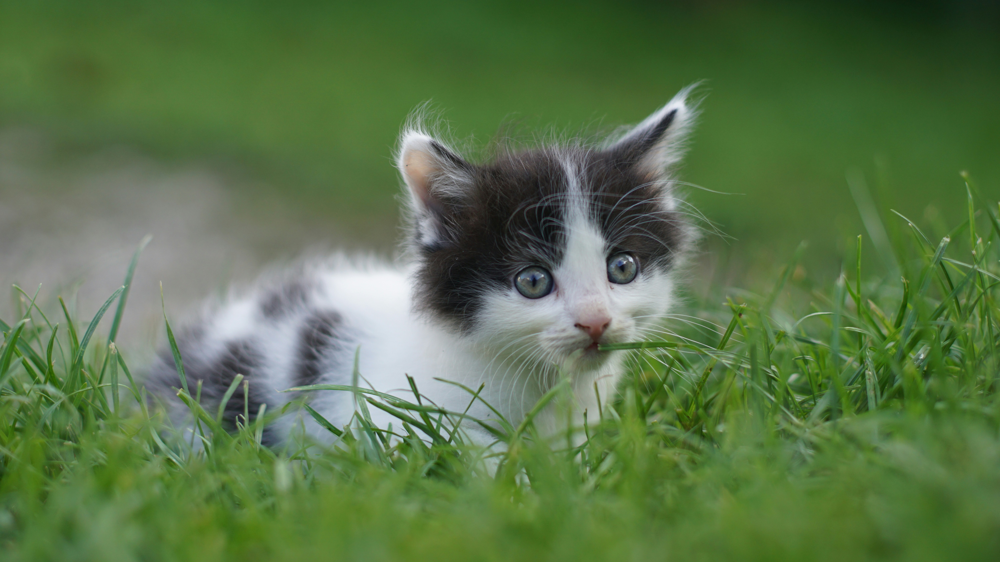
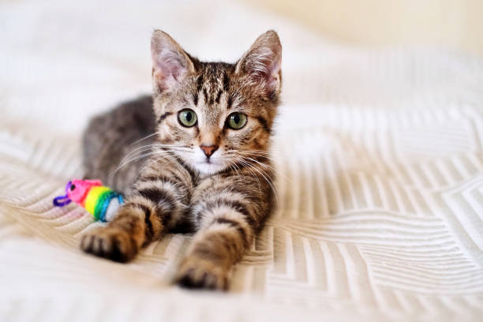
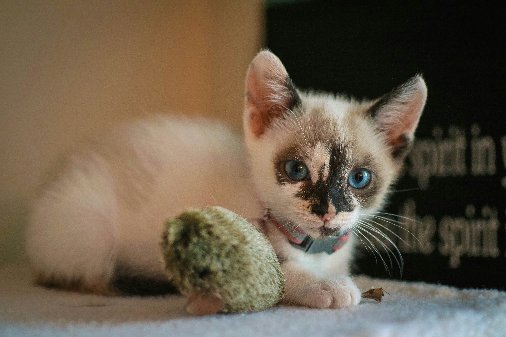
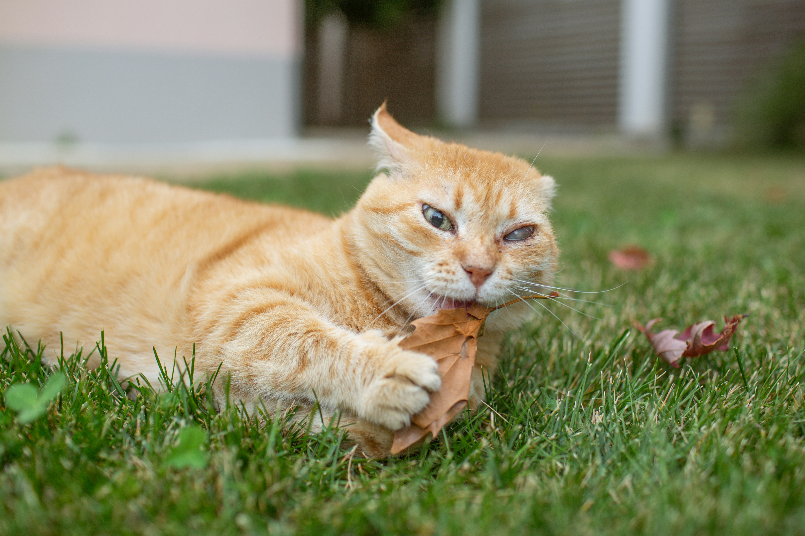
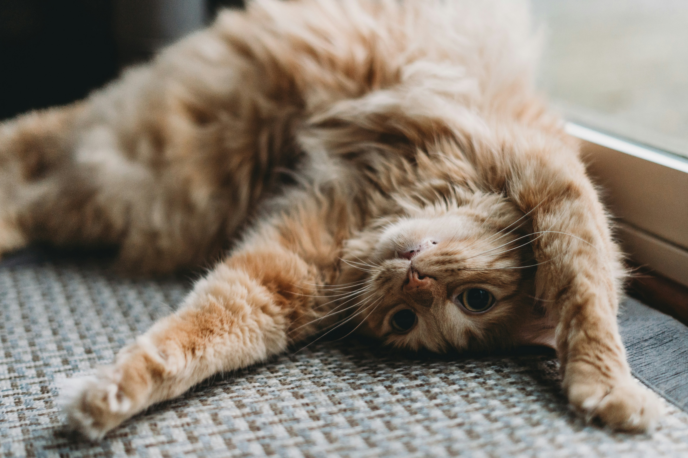
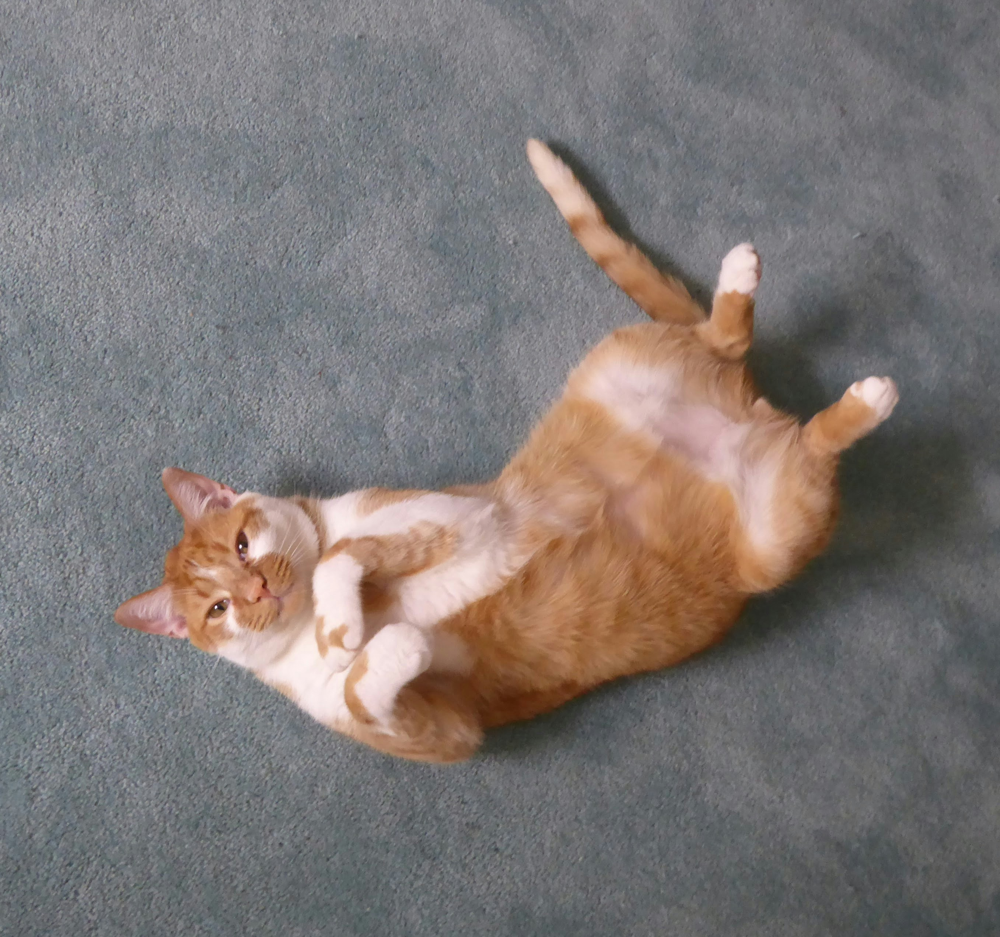
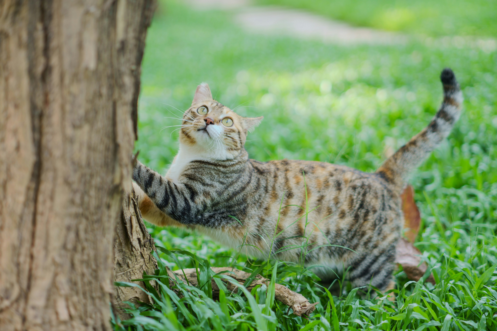

CatAstrofe Adopciones
¡Adoptá de forma responsable!

Cat Astrofe es un refugio independiente creado en el año 2021 en San Justo, Buenos Aires, Argentina. Nació del amor y compromiso de tres hermanas —Lu, Anita y Andre— quienes comenzaron rescatando gatitos en situación de abandono y, con el tiempo, construyeron un espacio seguro para ellos. En el refugio, cada michi recibe lo que más necesita: cuidado, alimento, atención y, sobre todo, la oportunidad de sanar y recuperar su salud para tener una vida mejor. Creemos profundamente en las segundas oportunidades, por eso fomentamos la adopción responsable. Cada gatito que llega al refugio sueña con encontrar un hogar lleno de amor, paciencia y compromiso. Adoptar no solo cambia la vida de un animal, también transforma la tuya 💛🐱 Este proyecto es posible gracias a la ayuda de personas que acompañan de distintas formas: quienes transitan gatitos, quienes colaboran con donaciones y quienes difunden cada caso. A todos ellos, ¡gracias de corazón! 💛 Cat Astrofe sigue creciendo y siempre necesita apoyo para cubrir gastos veterinarios, alimento y cuidados diarios. Cualquier ayuda suma y hace una gran diferencia en la vida de los rescatados. Además, si sentís el deseo de involucrarte más, las puertas están abiertas para quienes quieran ser voluntarios y brindar amor y tiempo a estos pequeños. Adoptar es dar amor y recibirlo multiplicado.
Gatitos bebés en adopción
Pequeños corazones en busca de un hogar. Estos gatitos bebés están listos para empezar una nueva vida llenando tu casa de amor, juegos y ternura. Cada uno espera una familia que los cuide y acompañe para siempre.

Tomi (machito, 45 días) es un bebito curioso y muy juguetón, siempre listo para explorar y robarte una sonrisa. Le encanta jugar y después acurrucarse para dormir cerca tuyo. Se encuentra vacunado y desparasitado, listo para un hogar lleno de amor.

Tutuca (machito, 2 meses) es dulce y tranquilo, ideal para quienes buscan un compañero mimoso. Disfruta de los momentos de calma y de estar acompañado. Está vacunado y desparasitado, preparado para formar parte de una familia responsable.

Toron (hembra, 3 meses) es una pequeñita muy tierna y observadora, con una mirada que enamora. Es juguetona pero también le encanta recibir caricias. Se encuentra vacunada y desparasitada, lista para ir a su nuevo hogar.

Dracu (machito, 50 días) es un gatito lleno de energía, súper juguetón y divertido. Le encanta correr, saltar y descubrir cosas nuevas. Está vacunado y desparasitado, esperando una familia que lo acompañe en todas sus aventuras.

Kenny (machito, 3 meses) es cariñoso y compañero, siempre buscando mimos y atención. Tiene un carácter muy dulce y se adapta fácilmente. Se encuentra vacunado y desparasitado, listo para recibir todo el amor de su nueva familia.

Catalina (hembra, 2 meses) es una bebita delicada y muy amorosa, perfecta para quienes buscan una compañera tranquila y dulce. Disfruta de los mimos y de los espacios cálidos. Está vacunada y desparasitada, lista para ser adoptada.
Gatos adultos en adopción
Miles de gatos adultos pierden la oportunidad de un hogar por el MITO de que "jamás se adaptarán". Date una chance de conocer un amor sin fin. Adoptá un gato adulto.

Nacho (machito, 2 años) Este hermoso gatito busca un hogar lleno de amor. Es juguetón y muy cariñoso. Tiene una mirada dulce que enamora y una personalidad tranquila.Está listo para compartir momentos únicos con su nueva familia.

Jimmy (machito, 3 años) Rescatado de maltrato, este dulce gatito busca amor, paciencia y un hogar seguro. Es cariñoso, valiente y merece sanar rodeado de cuidado, mimos y una familia que lo quiera para siempre.

Kim (hembra, 2 años) Su familia se va de viaje y no puede llevarla. Esta gatita es dulce, juguetona y muy mimosa. Busca un hogar responsable donde la cuiden, le den amor y le brinden la estabilidad que merece

Walter (machito, 3 años) Este hermoso gatito busca un hogar lleno de amor. Es tranquilo y cariñoso. Tiene una dulzura única que conquista a cualquiera. Está listo para encontrar una familia que lo cuide y le brinde mucho amor..

Jesse (machito, 4 años) Es muy juguetón, curioso y le encanta estar cerca de las personas. Tiene una personalidad dulce y divertida. Ideal para una familia que quiera compañía fiel y momentos llenos de cariño.

Skyler (hembra, 3 años) Le gusta curiosear y jugar siempre. Es una compañera leal y cariñosa. Se lleva bien con perros y otros gatos. Le encanta estar en el césped y escalar árboles. Busca un hogar donde la amen y cuiden.
Requisitos para la adopción responsable de un gato
Ser mayor de 18 años. El hogar deberá contar con la protección necesaria (medianeras altas, red en ventanas, cerramiento adecuado en balcón y terrazas, mosquiteros, etc.). Este requisito lo pedimos para evitar que el gato corra peligro de escaparse, perderse, lastimarse y/o de terminar con su vida. Dedicamos gran parte de nuestras vidas a rescatar, cuidar y castrar gatos y perros y no queremos que ellos sufran las consecuencias de no cuidarlos como ellos merecen. Un gato puede caerse de un balcón si no ponemos protección, trepar medianeras bajas y escaparse, ser atropellado cruzando la calle, sufrir maltrato de parte de los humanos, contraer enfermedades de otros gatos que se encuentran en el barrio, ser mordidos por perros, ingerir veneno y muchísimos peligros más. Existen muchas maneras de proteger el hogar. Si el adoptado se entregara sin esterilizar, es OBLIGATORIA la CASTRACIÓN del mismo. Recomendamos castrar a las hembras a los 5/6 meses y a los machos a los 7/8 o según indique el veterinario de cabecera. Bajo ningún punto de vista, las gatas adoptadas podrán quedar preñadas. Es incontable la cantidad de gatas no castradas, preñadas o con crías que se encuentran en la calle constantemente. Los hogares no alcanzan para todos los gatos que siguen naciendo todos los días, los que se encuentran en adopción en agrupaciones, refugios o con rescatistas y por eso debemos ser responsables siempre y castrar a nuestras gatas y gatos. El adoptante se compromete a encargarse de mantener la buena salud del gato. Esto incluye brindarle un alimento de buena calidad que corresponda a su edad y/o estado, marcas como: Pro Plan, Royal Canin, Eukanuba, Old Prince, Excellent, Performance, Iams, Agility, Vital Can, Sieger o marcas avaladas por el veterinario de cabecera, llevar adelante las controles veterinarios necesarios, vacunaciones, desparasitaciones y todo lo que indique el médico veterinario. Aceptar seguimiento post-adopción. Esto significa que el adoptante se compromete a mantener contacto siempre con el/la transitante y a informar mediante mensajes, enviando fotos y vídeos, etc. sobre el adoptado periódicamente durante el tiempo que el gato viva. A nosotros nos encanta saber cómo están esos gatos que rescatamos, que cuidamos, que amamos y a quienes prometimos encontrarles las mejores familias. Si cumplís y estás de acuerdo con estos requisitos, podés completar el formulario de pre adopción.